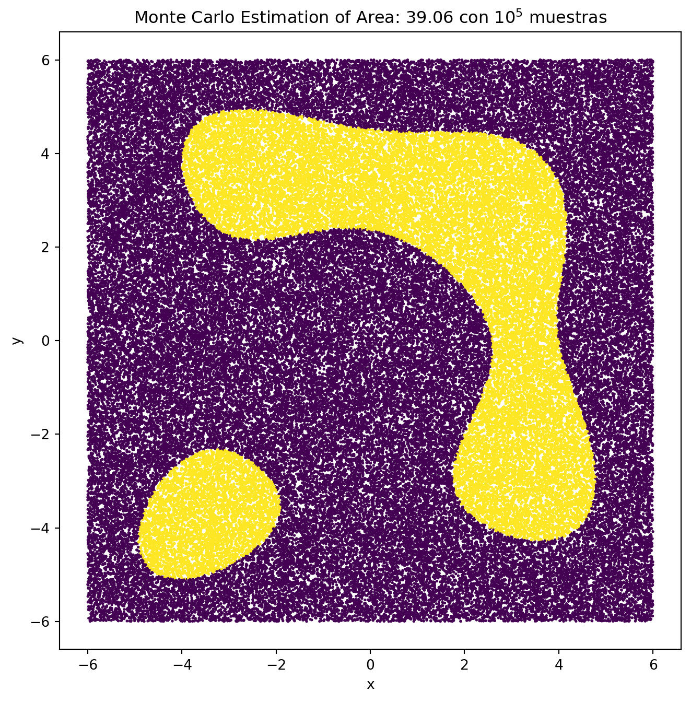

def F(x, y):
return (x**2 + y - 10)**2 + (x + y**2 - 12)**2 - 100Práctica 1
ITAM - Métodos Numéricos y Optimización (MAT-34420)
Una función implítica es una función de la forma: \[F(x,y) = 0\] Las funciones implícitas se pueden utilizar para modelar objetos geométricos. Así, un objeto geométrico puede estar definido en términos de \(F : \mathbb{R}^2 \rightarrow \mathbb{R}\) como: \[\mathcal{G} = \left\{ (x, y) \in \mathbb{R}^2 \mid F(x, y) \leq 0 \right\} \subset \mathbb{R}^2.\]
Considera la región \(\mathcal{G}\) determinada por la función: \[F(x,y) = (x^2+y−10)^2+(x+y^2−12)^2 −100\]
Calcular Bounding Box
Ya que es una función que se puede representar en el plano cartesiano, para calcular el bounding box se hará de forma visual empezando por -10 a 10 ya que AHHHHHH
Definimos la función F(x, y)
Creamos gráfica para ver límites
x = np.linspace(-10, 10, 200)
y = np.linspace(-10, 10, 200)
X, Y = np.meshgrid(x, y)
# Calcular F en todos los puntos de la malla
Z = F(X, Y)
# Crear la gráfica
plt.figure(figsize=(8, 6))
contour = plt.contour(X, Y, Z, levels=[0], colors='red') # Dibujar el contorno donde F(x, y) = 0
plt.clabel(contour, inline=True, fontsize=10)
plt.title(r"Contorno de la función $F(x, y) = 0$")
plt.xlabel("X")
plt.ylabel("Y")
plt.grid(True)
plt.axhline(0, color='black',linewidth=0.5)
plt.axvline(0, color='black',linewidth=0.5)
plt.show()Al ver la gráfica podemos ver que un bounding box correcto, agregando un ligero margen, sería el cuadrado de \(x \in [-6,6]\) y \(y \in [-6,6]\)
Estimación de área por Montecarlo
La estimación de área por Monte Carlo es un método que usa puntos generados al azar para aproximar el área de una figura. Podemos verlo como lanzar muchos puntos dentro de un rectángulo que rodea la figura. Luego, cuentas cuántos puntos caen dentro de la figura y cuántos fuera. Con esa proporción, multiplicada por el área del rectángulo, puedes calcular el área aproximada de la figura, incluso si su forma es irregular.
Primero graficamos cómo se vería esta definición con \(10^5\) muestras:
# definimos el bounding box
x_min, x_max = -6, 6
y_min, y_max = -6, 6
bounding_box_area = (x_max - x_min) * (y_max - y_min)
# gráfica
num_points = 10**5
# puntos aleatorios
x_random = np.random.uniform(x_min, x_max, num_points)
y_random = np.random.uniform(y_min, y_max, num_points)
F_values = F(x_random, y_random)
# nos quedamos con los valores F(x, y) <= 0
points_inside = F_values <= 0
area_fraction = np.sum(points_inside) / num_points
estimated_area = bounding_box_area * area_fraction
# Visualización de los puntos
plt.figure(figsize=(8, 8))
plt.scatter(x_random, y_random, c=points_inside, s=1)
plt.title(f"Monte Carlo Estimation of Area: {estimated_area:.2f} con $10^5$ muestras")
plt.xlabel("x")
plt.ylabel("y")
plt.show()
después de ver cómo se representa en el plano calculamos el área de \(\mathcal{G}\) usando el método de Monte Carlo con \(10^2,10^3,...,10^8\) muestras.
np.random.seed(44)
exp = [i for i in range(2,9)]
frames = []
for i in exp:
num_points = 10**i
x_random = np.random.uniform(x_min, x_max, num_points)
y_random = np.random.uniform(y_min, y_max, num_points)
F_values = F(x_random, y_random)
points_inside = F_values <= 0
# Área estimada
area_fraction = np.sum(points_inside) / num_points
estimated_area = bounding_box_area * area_fraction
# guardar info
frames.append({"muestras":num_points,"area_estimada":estimated_area})
estimated_area_df = pd.DataFrame(frames)
estimated_area_df.style.format({
'muestras': '{:.0e}',
'area_estimada': '{:.2f}'
})| muestras | area_estimada | |
|---|---|---|
| 0 | 1e+02 | 33.12 |
| 1 | 1e+03 | 41.90 |
| 2 | 1e+04 | 39.08 |
| 3 | 1e+05 | 38.96 |
| 4 | 1e+06 | 38.81 |
| 5 | 1e+07 | 38.76 |
| 6 | 1e+08 | 38.77 |
Vemos que mientras más puntos mejor es nuestra aproximación del área dando un área de 38.77 unidades cuadradas con \(10^8\) muestras.
Estimación de área con método recursivo
En este caso calculamos el valor de \(F(x,y)\) en las esquinas del bounding box, en este caso todo va estar fuera de \(\mathcal{G}\) eya que le dimos un margen, y al tener todas las esquinas fuera de \(\mathcal{G}\) se volvera a calcular pero dividiendo el cuadrado en cuatro partes y se volverá a calcular las esquinas hasta llegar a la profundid máxima, una vez que se llega a la profundidad máxima se hará un montecarlo para ajustar el área de es subconjunto que no vamos a volver a dividir.
def polygon_area(xlims, ylims):
"""calcula el área de un rectángulo basado en sus coordenadas"""
b = abs(xlims[1] - xlims[0])
h = abs(ylims[1] - ylims[0])
area = b * h
return area
def recursive_plot(fun,xlims,ylims,maxdepth=5):
"""
Cálculo de área con método recursivo más gráfico explicativo
fun - función implícita
xlims - límites en x, array [xmin, xmax]
ylims - límites en y, array [ymin, ymax]
maxdepth - profundidad máxima de recursión"""
result = 0
# cálculo montecarlo
n = 1000
x = np.random.uniform(xlims[0], xlims[1], n)
y = np.random.uniform(ylims[0], ylims[1], n)
# cálculo de cuadrado
polyx = np.array([xlims[0], xlims[0], xlims[1], xlims[1], xlims[0]])
polyy = np.array([ylims[0], ylims[1], ylims[1], ylims[0], ylims[0]])
corners = np.array([0,0,0,0])
for i in np.array([0,1]):
for j in np.array([0,1]):
corners[2*i+j] = sign(fun(xlims[i],ylims[j]))
if np.all(np.array(corners) == -1):
# todo el conjunto esta en G
plt.fill( polyx, polyy, color='purple',linewidth=0.5, edgecolor="k")
result += polygon_area(xlims, ylims)
elif np.all(np.array(corners) == 1):
# todo el conjunto está afuera
# revisar si tiene parte de la función
suc = np.sum(fun(x,y) <= 0)
if suc > 0:
# si la función esta en el conjunto subdividir y volver a evaluar
xmid = (xlims[0]+xlims[1])/2
ymid = (ylims[0]+ylims[1])/2
result += recursive_plot(fun,[xlims[0],xmid],[ylims[0],ymid],maxdepth-1)
result += recursive_plot(fun,[xmid,xlims[1]],[ylims[0],ymid],maxdepth-1)
result += recursive_plot(fun,[xlims[0],xmid],[ymid,ylims[1]],maxdepth-1)
result += recursive_plot(fun,[xmid,xlims[1]],[ymid,ylims[1]],maxdepth-1)
else:
# si no hay parte de la función colorear de gris
plt.fill( polyx, polyy,
linewidth=0.5, edgecolor="k", color='gray',alpha=0.4
)
elif maxdepth == 0:
# si llegó a la máxima profundidad terminar con montecarlo
suc = np.sum(fun(x,y) <= 0)
plt.fill( polyx, polyy, color='brown',linewidth=0.5, edgecolor="k")
result += (polygon_area(xlims, ylims) * (suc/n))
else:
# si la función tiene partes en G y otras no subdividir y volver a evaluar
xmid = (xlims[0]+xlims[1])/2
ymid = (ylims[0]+ylims[1])/2
result += recursive_plot(fun,[xlims[0],xmid],[ylims[0],ymid],maxdepth-1)
result += recursive_plot(fun,[xmid,xlims[1]],[ylims[0],ymid],maxdepth-1)
result += recursive_plot(fun,[xlims[0],xmid],[ymid,ylims[1]],maxdepth-1)
result += recursive_plot(fun,[xmid,xlims[1]],[ymid,ylims[1]],maxdepth-1)
return resultGraficamos la función donde el morado es los subconjuntos que detecto que pertenecen a \(\mathcal{G}\) y los cafes los aproximo por montecarlo.
np.random.seed(44)
fig = plt.figure( figsize=(10,10) )
result = recursive_plot(F,[-6,6],[-6,6],7)
plt.axis('equal')
plt.title(f"Area = {result:-2f}")
plt.show()
Vemos que el área estimada es muy similar que estimando todo por montecarlo 38.77 unidades cuadradas
Cálculo de probabilidades
Caso de normal bivariada
Calculamos la probabilidad de que un punto aleatorio \((x,y)\) esté en la región \(\mathcal{G}\). Las componentes de \((x, y) \in \mathbb{R}^2\) se distribuyen como normal bivariada con medias \(\mu_x,\mu_y\), desviaciones estándar \(\sigma_x,\sigma_y\), y correlación \(p_{xy}\). \[\mathbb{P}[(x, y) \in \mathcal{G}] =?\]
Integral para calcular esta probabilidad.
La función de densidad conjunta de la distribución normal bivariada es \[ f(x, y) = \frac{1}{2\pi\sigma_X\sigma_Y\sqrt{1-\rho^2}} \exp \left( -\frac{1}{2(1-\rho^2)} \left[ \frac{(x-\mu_X)^2}{\sigma_X^2} + \frac{(y-\mu_Y)^2}{\sigma_Y^2} - 2\rho\frac{(x-\mu_X)(y-\mu_Y)}{\sigma_X\sigma_Y} \right] \right) \]
Dando un integral de
\[ \mathbb{P}[(x,y) \in \mathcal{G}] = \iint_{\mathcal{G}} \frac{1}{2\pi\sigma_X\sigma_Y\sqrt{1-\rho^2}} \exp \left( -\frac{1}{2(1-\rho^2)} \left[ \frac{(x-\mu_X)^2}{\sigma_X^2} + \frac{(y-\mu_Y)^2}{\sigma_Y^2} - 2\rho\frac{(x-\mu_X)(y-\mu_Y)}{\sigma_X\sigma_Y} \right] \right) \, dx \, dy \]
Montecarlo: En este caso por la complejidad de la integral podemos usar Montecarlo para estimar el valor de \(\mathcal{G}\), para esto se generan múltiples muestras \((x,y)\) con la distribución normal bivariada especificada (con medias \(\mu_x,\mu_y\), desviaciones estándar \(\sigma_x,\sigma_y\), y correlación \(p_{xy}\)). Luego, se evalúa la función \(F(x,y)\) para determinar si cada muestra cae dentro de la región \(\mathcal{G}\). La probabilidad se estima como la proporción de muestras que cumplen \(F(x,y)≤0\) respecto al total de muestras generadas.
Calculamos montecarlo con muestras \(10^2, 10^3, . . . , 10^8\) suponiendo que las componentes de \((x, y) \in \mathbb{R}^2\) se distribuyen como normal bivariada con \(\mu_x = \mu_y \in \{−6, −5, . . . , 5, 6\}\), \(\sigma_x = \sigma_y \in \{1,2,3,4,5\}\) y \(p_{xy} = 0\)
def calcular_probabilidad_region(N, mu_x, mu_y, sigma_x, sigma_y, p_xy, F):
"""
Calcula la probabilidad de que (x, y) esté en la región G utilizando Monte Carlo.
Args:
N (int): Número de muestras aleatorias a generar.
mu_x (float): Media de la distribución en el eje x.
mu_y (float): Media de la distribución en el eje y.
sigma_x (float): Desviación estándar en el eje x.
sigma_y (float): Desviación estándar en el eje y.
p_xy (float): Correlación entre x e y.
F (function): Función que define la región G (retorna True si está en la región).
Returns:
float: Probabilidad estimada de que (x, y) esté en la región G.
"""
# Matriz de covarianza para la normal bivariada
cov_matrix = [[sigma_x**2, p_xy * sigma_x * sigma_y],
[p_xy * sigma_x * sigma_y, sigma_y**2]]
# Generar N muestras aleatorias de la normal bivariada
muestras = np.random.multivariate_normal([mu_x, mu_y], cov_matrix, N)
return np.sum(np.array(F(muestras[:, 0], muestras[:, 1])) <= 0) / len(muestras)
mus = np.arange(-6, 7, 1) # Medias mu_x y mu_y de -6 a 6
sigmas = [1, 2, 3, 4, 5] # Desviaciones estándar sigma_x y sigma_y
p_xy = 0 # Correlación entre x e y
N_values = [10**i for i in range(2, 9)] # Valores de N = 10^2, 10^3, ..., 10^8
# DataFrame para guardar los resultados
frames = list()
# Calcular la probabilidad para cada combinación de parámetros
for mu_x in mus:
mu_y = mu_x
for sigma_x in sigmas:
sigma_y = sigma_x # Igualar sigma_x y sigma_y
for N in N_values:
probabilidad = calcular_probabilidad_region(N, mu_x, mu_y, sigma_x, sigma_y, p_xy, F)
frames.append({"N":N, "mu_x":mu_x, "mu_y":mu_y, "sigma_x":sigma_x,
"sigma_y":sigma_y, "probabilidad":probabilidad})Distribuciones con mayor probabilidad
Vemos que las distribuciones con mayor probabilidad son
top_probs = (
pd.DataFrame(frames)
.sort_values('probabilidad',ascending=False)
.drop_duplicates(subset=['mu_x','mu_y','sigma_x','sigma_y'])
.head(4)
)
top_probs.style.format({
'probabilidad': '{:.4f}',
'N': '{:.1e}'
})| N | mu_x | mu_y | sigma_x | sigma_y | probabilidad | |
|---|---|---|---|---|---|---|
| 316 | 1.0e+03 | 3 | 3 | 1 | 1 | 0.7630 |
| 285 | 1.0e+07 | 2 | 2 | 1 | 1 | 0.7443 |
| 71 | 1.0e+03 | -4 | -4 | 1 | 1 | 0.5910 |
| 106 | 1.0e+03 | -3 | -3 | 1 | 1 | 0.5110 |
Y graficamos comparando con la \(F(x,y)\)
params = top_probs.drop(columns=['probabilidad']).values
fig, axes = plt.subplots(2, 2, figsize=(10, 10))
for (i, ax), param in zip(enumerate(axes.flatten()), params):
N, mu_x, mu_y, sigma_x, sigma_y = param
plt.sca(ax)
# función para hacer subplot con los puntos de la distribución
# bivariada y F
plot_bivariate_gaussian(mu_x, mu_y, sigma_x, sigma_y, N)
plt.tight_layout()
plt.show()Distribuciones con menor probabilidad
low_probs = (
pd.DataFrame(frames)
.sort_values('probabilidad')
.drop_duplicates(subset=['mu_x','mu_y','sigma_x','sigma_y'])
.head(4)
)
low_probs.style.format({
'probabilidad': '{:.4f}',
'N': '{:.1e}'
})| N | mu_x | mu_y | sigma_x | sigma_y | probabilidad | |
|---|---|---|---|---|---|---|
| 420 | 1.0e+02 | 6 | 6 | 1 | 1 | 0.0000 |
| 178 | 1.0e+05 | -1 | -1 | 1 | 1 | 0.0089 |
| 427 | 1.0e+02 | 6 | 6 | 2 | 2 | 0.0100 |
| 1 | 1.0e+03 | -6 | -6 | 1 | 1 | 0.0140 |
params = low_probs.drop(columns=['probabilidad']).values
fig, axes = plt.subplots(2, 2, figsize=(10, 10))
for (i, ax), param in zip(enumerate(axes.flatten()), params):
N, mu_x, mu_y, sigma_x, sigma_y = param
plt.sca(ax)
# función para hacer subplot con los puntos de la distribución
# bivariada y F
plot_bivariate_gaussian(mu_x, mu_y, sigma_x, sigma_y, N)
plt.tight_layout()
plt.show()Interpretación
A pesar de que la probabilidad máxima con una distribución normal bivariada es \[\mathbb{P}\left[(x, y) \in \mathcal{G} \mid (x, y) \sim \mathcal{N}(\mu_{xy}, \Sigma)\right] = 0.76,\] esta aproximación no es muy confiable, ya que la región cubierta por la distribución es pequeña y se concentra solo en una parte específica de \(\mathcal{G}\). En contraste, aunque la probabilidad con una distribución uniforme es menor, \[\mathbb{P}\left[(x, y) \in \mathcal{G} \mid (x, y) \sim \mathcal{U}(-6, 6) \times \mathcal{U}(-6, 6)\right] = 0.27,\] esta distribución cubre toda el área de \(\mathcal{G}\), lo que resulta en una mejor estimación del área de \(F(x, y)\), ya que no se limita a una región específica.